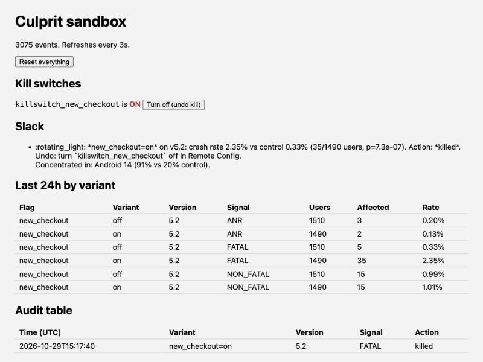

Culprit, tested end to end
A local sandbox stands in for the flag tool, crash reporting and Slack. A real iOS app and thousands of simulated users break a feature, and the real Culprit job has to find it, name it and switch it off.
The demo, in one minute
The sample iOS app "Bean There" reads its watched flag only through Flags.swift. In variant on its new checkout is deliberately broken. Click a step to jump to it.
Key results
Five scenarios, 30 random seeds each, 3,000 users per run (about 1,500 per variant), all run with auto-kill on. Every run goes through the real run() in job/main.py: thresholds, the z-test, dedupe, kill policy, breakdown, Slack text and the audit row.
Runs handled correctly, by scenario
Healthy: no alert at all. Broken: the right signal was found and got the right action (killed for crash and ANR, alert only for non-fatal errors).
| Scenario | What's broken | Runs | Found | Right action | Other alerts | Breakdown | Median ratio |
|---|
Reading the misses
Every miss was a run where the regression didn't clear Culprit's deliberately strict bar: at least 10 affected users, at least 2× control, and p below 0.001 split across the three signals. With about 30 crashes in 1,500 users, random noise sometimes leaves the gap just under it. The Android 14 scenario misses more often because only a quarter of users carry the bug, so the overall rate rises less. In production the job reruns every 15 minutes over a 24-hour window, and more users give the test more power. The trade is intentional: a missed run costs one more run, a false kill costs a working feature.
The sandbox dashboard
The sandbox serves a live page at http://localhost:8787/ that refreshes every 3 seconds. This is the Android 14 scenario after one job run with auto-kill:

What this does and doesn't prove
Covered by the sandbox
- Detection: thresholds, z-test and Bonferroni correction
- Kill policy: auto-kill opt-in, non-fatal errors never kill
- No repeat alert within 24 hours
- OS and device breakdown, and the Slack text
- Audit rows
- The app side: wrapper, tagging, kill switch serving control
Needs a staging project
- The BigQuery SQL against real Crashlytics and Analytics exports
- The Sentry queries and tag names
- Real Remote Config and Statsig writes
- Crash capture by a real SDK (iOS hangs need Sentry)
- Deploy, scheduler and IAM
The staging checklist is in the README.
Run it yourself
Python 3 only, no accounts:
python3 sandbox/server.py # then open http://localhost:8787/ cd sandbox && python3 simulate.py crash && python3 run_job.py --auto-kill python3 benchmark.py # regenerates the numbers on this page
For the app, open sample/ios/CulpritDemo.xcodeproj in Xcode and run it on any iPhone simulator while the sandbox is running.